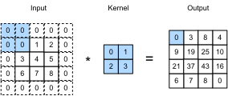

Padding and Stride
:label:sec_padding
Recall the example of a convolution in :numref:fig_correlation. The input had both a height and width of 3 and the convolution kernel had both a height and width of 2, yielding an output representation with dimension $2\times2$. Assuming that the input shape is $n_\textrm{h}\times n_\textrm{w}$ and the convolution kernel shape is $k_\textrm{h}\times k_\textrm{w}$, the output shape will be $(n_\textrm{h}-k_\textrm{h}+1) \times (n_\textrm{w}-k_\textrm{w}+1)$: we can only shift the convolution kernel so far until it runs out of pixels to apply the convolution to.
In the following we will explore a number of techniques, including padding and strided convolutions, that offer more control over the size of the output. As motivation, note that since kernels generally have width and height greater than $1$, after applying many successive convolutions, we tend to wind up with outputs that are considerably smaller than our input. If we start with a $240 \times 240$ pixel image, ten layers of $5 \times 5$ convolutions reduce the image to $200 \times 200$ pixels, slicing off $30 \%$ of the image and with it obliterating any interesting information on the boundaries of the original image. Padding is the most popular tool for handling this issue. In other cases, we may want to reduce the dimensionality drastically, e.g., if we find the original input resolution to be unwieldy. Strided convolutions are a popular technique that can help in these instances.
using Pkg; Pkg.activate("d2lai")
using d2lai, Flux Activating project at `~/Projects/D2L/d2lai`Padding
As described above, one tricky issue when applying convolutional layers is that we tend to lose pixels on the perimeter of our image. Consider :numref:img_conv_reuse that depicts the pixel utilization as a function of the convolution kernel size and the position within the image. The pixels in the corners are hardly used at all.
 :label:
:label:img_conv_reuse
Since we typically use small kernels, for any given convolution we might only lose a few pixels but this can add up as we apply many successive convolutional layers. One straightforward solution to this problem is to add extra pixels of filler around the boundary of our input image, thus increasing the effective size of the image. Typically, we set the values of the extra pixels to zero. In :numref:img_conv_pad, we pad a $3 \times 3$ input, increasing its size to $5 \times 5$. The corresponding output then increases to a $4 \times 4$ matrix. The shaded portions are the first output element as well as the input and kernel tensor elements used for the output computation: $0\times0+0\times1+0\times2+0\times3=0$.
 :label:img_conv_pad
In general, if we add a total of $p_\textrm{h}$ rows of padding (roughly half on top and half on bottom) and a total of $p_\textrm{w}$ columns of padding (roughly half on the left and half on the right), the output shape will be
\[(n_\textrm{h}-k_\textrm{h}+p_\textrm{h}+1)\times(n_\textrm{w}-k_\textrm{w}+p_\textrm{w}+1).\]
This means that the height and width of the output will increase by $p_\textrm{h}$ and $p_\textrm{w}$, respectively.
In many cases, we will want to set $p_\textrm{h}=k_\textrm{h}-1$ and $p_\textrm{w}=k_\textrm{w}-1$ to give the input and output the same height and width. This will make it easier to predict the output shape of each layer when constructing the network. Assuming that $k_\textrm{h}$ is odd here, we will pad $p_\textrm{h}/2$ rows on both sides of the height. If $k_\textrm{h}$ is even, one possibility is to pad $\lceil p_\textrm{h}/2\rceil$ rows on the top of the input and $\lfloor p_\textrm{h}/2\rfloor$ rows on the bottom. We will pad both sides of the width in the same way.
CNNs commonly use convolution kernels with odd height and width values, such as 1, 3, 5, or 7. Choosing odd kernel sizes has the benefit that we can preserve the dimensionality while padding with the same number of rows on top and bottom, and the same number of columns on left and right.
Moreover, this practice of using odd kernels and padding to precisely preserve dimensionality offers a clerical benefit. For any two-dimensional tensor X, when the kernel's size is odd and the number of padding rows and columns on all sides are the same, thereby producing an output with the same height and width as the input, we know that the output Y[i, j] is calculated by cross-correlation of the input and convolution kernel with the window centered on X[i, j].
In the following example, we create a two-dimensional convolutional layer with a height and width of 3 and (apply 1 pixel of padding on all sides.) Given an input with a height and width of 8, we find that the height and width of the output is also 8.
function comp_conv2d(conv2d, X)
X = reshape(X, size(X)..., 1, 1)
Y = conv2d(X)
Y = reshape(Y, size(Y)[1:2])
end
conv2d = Conv((3,3), 1 => 1; pad = 1)
# `pad` kwarg tells equal number of rows/columns to be added at each side
X = rand(8, 8)
comp_conv2d(conv2d, X) |> size(8, 8)When the height and width of the convolution kernel are different, we can make the output and input have the same height and width by setting different padding numbers for height and width.
conv2d = Conv((5,3), 1=>1; pad = (2, 1))
X = rand(8, 8)
comp_conv2d(conv2d, X) |> size(8, 8)Stride
When computing the cross-correlation, we start with the convolution window at the upper-left corner of the input tensor, and then slide it over all locations both down and to the right. In the previous examples, we defaulted to sliding one element at a time. However, sometimes, either for computational efficiency or because we wish to downsample, we move our window more than one element at a time, skipping the intermediate locations. This is particularly useful if the convolution kernel is large since it captures a large area of the underlying image.
We refer to the number of rows and columns traversed per slide as stride. So far, we have used strides of 1, both for height and width. Sometimes, we may want to use a larger stride. :numref:img_conv_stride shows a two-dimensional cross-correlation operation with a stride of 3 vertically and 2 horizontally. The shaded portions are the output elements as well as the input and kernel tensor elements used for the output computation: $0\times0+0\times1+1\times2+2\times3=8$, $0\times0+6\times1+0\times2+0\times3=6$. We can see that when the second element of the first column is generated, the convolution window slides down three rows. The convolution window slides two columns to the right when the second element of the first row is generated. When the convolution window continues to slide two columns to the right on the input, there is no output because the input element cannot fill the window (unless we add another column of padding).
 :label:
:label:img_conv_stride
In general, when the stride for the height is $s_\textrm{h}$ and the stride for the width is $s_\textrm{w}$, the output shape is
\[\lfloor(n_\textrm{h}-k_\textrm{h}+p_\textrm{h}+s_\textrm{h})/s_\textrm{h}\rfloor \times \lfloor(n_\textrm{w}-k_\textrm{w}+p_\textrm{w}+s_\textrm{w})/s_\textrm{w}\rfloor.\]
If we set $p_\textrm{h}=k_\textrm{h}-1$ and $p_\textrm{w}=k_\textrm{w}-1$, then the output shape can be simplified to $\lfloor(n_\textrm{h}+s_\textrm{h}-1)/s_\textrm{h}\rfloor \times \lfloor(n_\textrm{w}+s_\textrm{w}-1)/s_\textrm{w}\rfloor$. Going a step further, if the input height and width are divisible by the strides on the height and width, then the output shape will be $(n_\textrm{h}/s_\textrm{h}) \times (n_\textrm{w}/s_\textrm{w})$.
Below, we [set the strides on both the height and width to 2], thus halving the input height and width.
conv2d = Conv((3,3), 1=>1, pad = 1, stride = 2)
comp_conv2d(conv2d, X) |> size(4, 4)Let’s look at a slightly more complicated example.
conv2d = Conv((5,3), 1=>1; pad = (0, 1), stride = (3, 4))
comp_conv2d(conv2d, X) |> size(2, 2)Summary and Discussion
Padding can increase the height and width of the output. This is often used to give the output the same height and width as the input to avoid undesirable shrinkage of the output. Moreover, it ensures that all pixels are used equally frequently. Typically we pick symmetric padding on both sides of the input height and width. In this case we refer to $(p_\textrm{h}, p_\textrm{w})$ padding. Most commonly we set $p_\textrm{h} = p_\textrm{w}$, in which case we simply state that we choose padding $p$.
A similar convention applies to strides. When horizontal stride $s_\textrm{h}$ and vertical stride $s_\textrm{w}$ match, we simply talk about stride $s$. The stride can reduce the resolution of the output, for example reducing the height and width of the output to only $1/n$ of the height and width of the input for $n > 1$. By default, the padding is 0 and the stride is 1.
So far all padding that we discussed simply extended images with zeros. This has significant computational benefit since it is trivial to accomplish. Moreover, operators can be engineered to take advantage of this padding implicitly without the need to allocate additional memory. At the same time, it allows CNNs to encode implicit position information within an image, simply by learning where the "whitespace" is. There are many alternatives to zero-padding. :citet:Alsallakh.Kokhlikyan.Miglani.ea.2020 provided an extensive overview of those (albeit without a clear case for when to use nonzero paddings unless artifacts occur).
Exercises
- Given the final code example in this section with kernel size $(3, 5)$, padding $(0, 1)$, and stride $(3, 4)$, calculate the output shape to check if it is consistent with the experimental result.
- For audio signals, what does a stride of 2 correspond to?
- Implement mirror padding, i.e., padding where the border values are simply mirrored to extend tensors.
- What are the computational benefits of a stride larger than 1?
- What might be statistical benefits of a stride larger than 1?
- How would you implement a stride of $\frac{1}{2}$? What does it correspond to? When would this be useful?
Answers
Given the final code example in this section with kernel size $(3, 5)$, padding $(0, 1)$, and stride $(3, 4)$, calculate the output shape to check if it is consistent with the experimental result.
-> o_h = \lfloor (nh - kh + ph + sh) / s_h \rfloor $
$ o_h = \lfloor (8 - 3 + 0 + 3) / 3 \rfloor$ = 2
o_w = \lfloor (nw - kw + pw + sw) / s_w \rfloor $
$ o_w = \lfloor (8 - 5 + 1 + 4) / 4 \rfloor$ = 2
For audio signals, what does a stride of 2 correspond to?
-> stride in context of audio signals is the sampling rate.
Implement mirror padding, i.e., padding where the border values are simply mirrored to extend tensors.
->
function mirror_padding(X; pad = 0)
if isa(pad, Tuple)
@assert length(pad) == ndims(X) "Provide padding for each dimension of X"
end
pad = isa(pad, Integer) ? collect((pad for i in 1:ndims(X))) : pad
for dim in 1:ndims(X)
X = cat(selectdim(X, dim, reverse(1:(pad[dim]))), X, dims = dim)
X = cat(X, selectdim(X, dim, reverse((size(X, dim)-pad[dim]+1):size(X, dim))), dims = dim)
end
X
end
X = rand(3, 4)3×4 Matrix{Float64}:
0.607324 0.622089 0.942666 0.123568
0.665525 0.617463 0.439721 0.569019
0.683353 0.430504 0.752825 0.564902mirror_padding(X; pad = 1)5×6 Matrix{Float64}:
0.607324 0.607324 0.622089 0.942666 0.123568 0.123568
0.607324 0.607324 0.622089 0.942666 0.123568 0.123568
0.665525 0.665525 0.617463 0.439721 0.569019 0.569019
0.683353 0.683353 0.430504 0.752825 0.564902 0.564902
0.683353 0.683353 0.430504 0.752825 0.564902 0.564902What are the computational benefits of a stride larger than 1?
-> Stride larger than one implies less overlaps and thus less calculations and less memory
What might be statistical benefits of a stride larger than 1?
-> Stride larger than 1 will ensure lesser correlation between the outputs in the hidden layer representation.
How would you implement a stride of $\frac{1}{2}$? What does it correspond to? When would this be useful?
-> Stride of 1/2 is basically upsampling. It increases the number of samples. To implement this perhaps a better way would be to take 1/2 of the starting index and 1/2 of the end index and rest should be normal